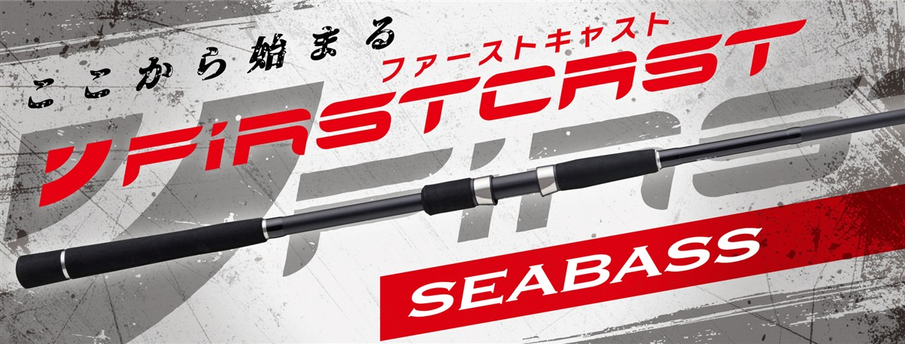

NEWファーストキャスト シーバスモデル
（NEW FIRSTCAST Seabass model）
更新日：2026年11月5日
NEWファーストキャスト シーバスモデル（NEW FIRSTCAST Seabass model）はMajor Craft（メジャークラフト）のシーバスロッドです。
ショアルアーゲームロッドの定番ファーストキャストがリニューアルしたシリーズで、ベイエリア、河口や干潟、サーフと、釣り場に合わせて選べる全3モデルで、シーバスを始める人に向いています。
初級者から中級者まで満足できるコスパ最強ロッドで、はじめてのシーバスを始めるのに最適の1本です。

画像出典:メジャークラフト公式HP
スペック
- メーカー
- Major Craft（メジャークラフト）
- タイプ
- シーバスロッド（スピニング）
- モデル数
- 3モデル
- 長さ
- 9'0"〜9'6"
- 継数
- 2ピース
- 対応ルアー
- 7〜45g
- PEライン
- 0.6〜2.0号
- 自重
- 135g〜148g
- アクション
- レギュラーファースト
- 価格
- 8,030円〜8,580円（税込）
- 発売
- 2026年10月
▼今すぐチェック
ファーストキャスト シーバスの特徴
ベイエリアから河口・サーフまで、釣り場で選べる全3モデル
-
初級者から中級者まで満足のコスパ最強ロッド
価格は税込8,030円から。手頃な価格ながら初級者から中級者まで満足できる内容で、はじめてのシーバスを始めるのに最適の1本。
-
操作性を重視したブランクス
中弾性カーボンをメインクロスに採用。キャストのしやすさとルアーの操作性の良さを考えたブランクス設計になっている。
-
ライントラブルを減らすKガイド
富士工業製のKガイドフレームを採用。強さと軽さを両立し、ライントラブルも減らしている。
-
使い手を選ばないグリップ
握りやすさと操作性を重視した、バランスの良いグリップデザイン。リールシートはダウンロック。
ファーストキャスト シーバスの使い方
ミノーやバイブレーションをキャストして、一定の速さで巻くのが基本です。
流れの変化や明暗の境目を通して、レンジと巻きスピードを変えて探ると反応を見つけやすくなります。重いルアーを使うならFCSB-962Mが向いています。
ファーストキャスト シーバスがおすすめの人
これからシーバスを始める人や、釣り場に合わせて買い足したい人に向いたシリーズです。
最初の1本なら、取り回しがよく釣り場を問わず使える9フィートのMLがおすすめです。河口や干潟で遠投が必要になったら、9フィート6インチが候補です。
よく行く釣り場で選べるので、初めてのシーバスが釣れるまでの1本としておすすめです。
シーバス以外の釣りにも使える
シーバスだけでなく、ちょい投げ釣りやサビキ釣りなどにも使えるので、初めての釣りにもおすすめです。1本持っておけば、ルアー釣りから堤防の五目釣りまで楽しめます。
使う仕掛けは、対応ルアーの重さ（7〜45g）を目安に選びましょう。
ワンポイント
迷ったら長すぎず取り回しのよいFCSB-902MLがおすすめです。釣り場を問わず使えるので、最初の1本に向いています。遠投が必要な場所に通うようになったら、FCSB-962MLを検討しましょう。
ファーストキャスト シーバスモデルの使い分け
| モデル | 長さ／対応ルアー／自重／価格（税込） | 得意な場面 |
|---|---|---|
| FCSB-902ML | 9'0"／7〜35g／135g／8,030円 | 初心者に一番おすすめ。取り回しがよく、釣り場を問わず使える |
| FCSB-962ML | 9'6"／7〜35g／142g／8,250円 | 遠投重視。河口や干潟で広く探る |
| FCSB-962M | 9'6"／10〜45g／148g／8,580円 | 40g前後のルアーも。河口やサーフに |
初心者には、取り回しがよく釣り場を問わず使える9フィートがおすすめです。河口や干潟で遠投したいなら9フィート6インチ、40g前後の重いルアーを使うならMが目安です。
ファーストキャスト シーバスの番手別チェック
番手ごとの特徴と、購入先のリンクです。
FCSB-902ML
9'0"／7〜35g／135g／8,030円
初心者に一番おすすめしたいのがこの番手です。9フィートはシリーズで最も短く、長すぎないので取り回しがよく、自重も135gと軽いので、キャストを繰り返しても疲れにくくなります。公式はベイエリアにおすすめとしていますが、7〜35gに対応し、ミノーやシンキングペンシルから小型のバイブレーションまで扱えるので、釣り場を問わずに使える1本です。迷ったら、まずこの番手を選びましょう。
▼今すぐチェック
FCSB-962ML
9'6"／7〜35g／142g／8,250円
902MLと同じ7〜35gに対応しながら、6インチ長い9フィート6インチで遠投を重視したモデルです。公式は河口や干潟で、遠くにルアーを飛ばして広く探る釣りにおすすめとしています。長さのぶん飛距離を出しやすく、沖の流れの変化まで届かせたい時に頼りになります。釣り場が広く、港湾より河口や干潟に行くことが多いならこの番手です。
▼今すぐチェック
FCSB-962M
9'6"／10〜45g／148g／8,580円
10〜45gに対応し、公式が重めの40g前後のルアーも扱えるとする、シリーズで最もパワーのあるモデルです。河口やサーフでも活躍するので、鉄板バイブレーションやヘビーシンキングペンシルを遠投したい人に向いています。PEラインも2.0号まで使えるので、流れの強い河口や大型の魚を意識する場所でも安心です。軽いルアーが中心なら、MLのほうが扱いやすくなります。
▼今すぐチェック
あわせてチェックしたいアイテム
-
 カワバンガ
ima
詳細はこちら＞
カワバンガ
ima
詳細はこちら＞
imaのシーバスロッド。ステップアップの候補として比べたい。
-
 ko 130S
ima
詳細はこちら＞
ko 130S
ima
詳細はこちら＞
全長130mm・自重12gの超スリムミノー。細身のベイトを狙うシーバスに。
-
 マイヨール70SL
アピア
詳細はこちら＞
マイヨール70SL
アピア
詳細はこちら＞
全長70mm・自重8.5gのシャッドミノー。ベイエリアのストラクチャー打ちに。